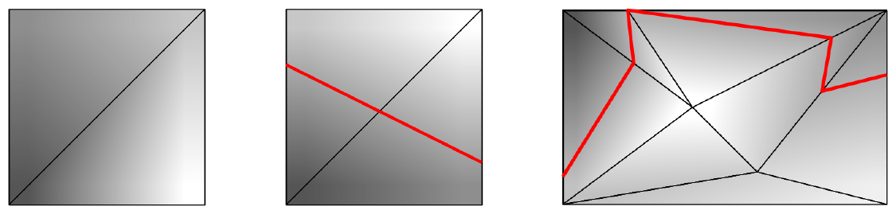

49th ICPC World Championship · Problem G
These pesky armies of good are coming to disturb the quiet and peaceful lands of the goblins again. Building a huge wall didn’t work out that well, and so the goblins are going to turn to the tried and true staple of defense: a moat filled with lava. They want to dig this moat as a boundary between the goblin lands in the north and the do-gooder lands in the south, crossing the whole borderlands west-to-east.
This presents them with a challenge. The borderlands are hilly, if not outright mountainous, while a lava moat has to be all on one level – otherwise the lava from the higher parts will flow down and out of the moat in the lower parts. So, the goblins have to choose a path that is all on one elevation, and connects the western border of the borderlands to its eastern border. For obvious economic reasons, they want this path to be as short as possible.
This is where you come in. You are given an elevation map of the borderlands, and your task is to determine how short the moat can be.
The map is in the form of a fully triangulated rectangle with dimensions w × ℓ, with all triangles having positive area. No vertex of a triangle lies on the interior of an edge of another triangle. The southwestern corner of the map has coordinates (0, 0), with the x-axis going east and the y-axis going north. Furthermore, the western border (the line segment connecting (0, 0) and (0, ℓ), including the endpoints) is a single edge. Similarly, the eastern border (between points (w, 0) and (w, ℓ)) is also a single edge.
Of course, this map is just a 2D projection of the actual 3D terrain: Every point (x, y) also has an elevation z. The elevation at the vertices of the triangulation is directly specified by the map, and all of these given elevations are distinct. The elevation at all other points can be computed by linear interpolation on associated triangles. In other words, the terrain is shaped like a collection of triangular faces joined together by shared sides. These faces correspond to the triangles on the map.

The first line of input contains an integer t (1 ≤ t ≤ 10 000), which is the number of test cases. The descriptions of t test cases follow.
The first line of each test case contains four integers w, ℓ, n, and m, where w (1 ≤ w ≤ 106) is the extent of the borderlands from west to east, ℓ (1 ≤ ℓ ≤ 106) is the extent from south to north, n (4 ≤ n ≤ 50 000) is the number of vertices, and m (n − 2 ≤ m ≤ 2n − 6) is the number of triangles in the provided triangulation.
This is followed by n lines, the ith of which contains three integers xi, yi, and zi (0 ≤ xi ≤ w; 0 ≤ yi ≤ ℓ; 0 ≤ zi ≤ 106), denoting the coordinates and the elevation of vertex i. The only vertices with xi = 0 or xi = w are the four corners. All pairs (xi, yi) are distinct. All zis are distinct.
Each of the following m lines contains three distinct integers a, b, and c (1 ≤ a, b, c ≤ n), denoting a map triangle formed by vertices a, b, and c in counter-clockwise order. These triangles are a complete triangulation of the rectangle [0, w] × [0, ℓ]. Each of the n vertices is referenced by at least one triangle.
Over all test cases, the sum of n is at most 50 000.
For each test case, if it is possible to construct a lava moat at a single elevation that connects the western border to the eastern border, output the minimum length of such a moat, with an absolute or relative error of at most 10−6. Otherwise, output impossible.
3 6 6 4 2 0 0 1 6 0 4 6 6 3 0 6 2 1 2 3 1 3 4 6 6 4 2 0 0 1 6 0 2 6 6 4 0 6 3 1 2 3 1 3 4 10 6 7 7 6 1 8 10 0 10 10 6 4 2 6 6 0 6 0 4 3 11 0 0 7 2 1 7 2 3 1 3 6 1 3 4 6 6 4 5 5 7 6 7 1 6
impossible 6.708203932 15.849260054